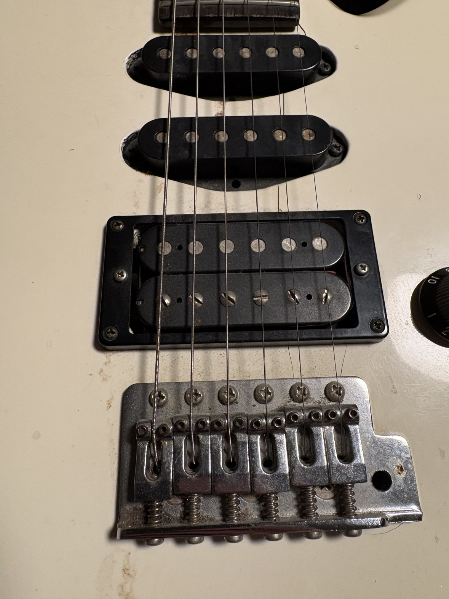

80s Guitar Episodes > Yamaha RGX112
Yamaha RGX112, Part 1
I saw this guitar on Facebook Marketplace. A white Yamaha RGX112, an 80s Yamaha I didn't know much about beyond what the photos showed: 24 frets and a plain vintage-style tremolo, no locking anything, which is my kind of guitar.
It was beat up. It appeared to be damaged, and it was listed in unknown working condition. It was sitting at $250.
Two hundred fifty dollars is a lot to pay for a beat-up guitar that might not work at all. Seventy-five seemed fair for the gamble. So I offered $75, with no pressure attached. I told the seller it was an open offer: they could wait and try to get more money for it, and if it didn't sell, my $75 would still be there.
Eventually they accepted the $75, and I was able to pick it up.

Last updated October 2026.